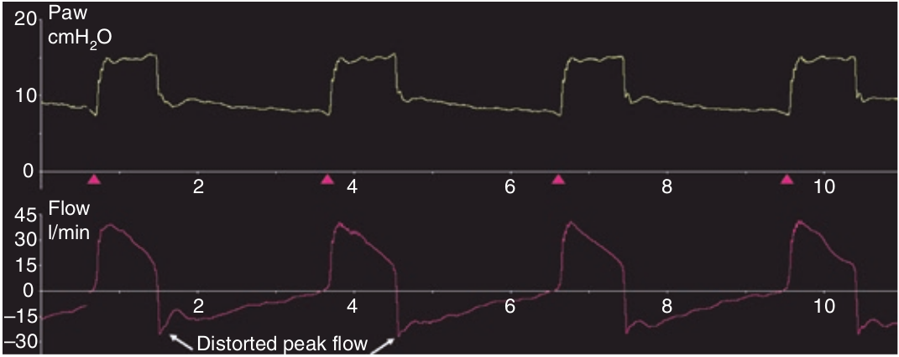

سایکل هنگامی نارس است که شدت جریان ونتیلاتور خاتمه یافته ولی بیمار هنوز تلاش دمی نشان میدهد. در اینجا شکل منحنی شدت جریان و فشار هردو در ابتدای بازدم دستخوش تغییر میشوند. در منحنی شدت جریان، مقدار شدت جریان حداکثر بازدمی کاهش می یابد و سپس بلافاصله به دنباله اوج شدت جریان بازدمی، تغییری در جهت منحنی شدت جریان ممکند است روی دهد و حتی ممکن است جهت آن معکوس شود (گفتیم که معکوس شدن جهت منحنی نشان دهنده تغییر جهت جریان از بیرون به داخل یا بالعکس است). بنابراین در منحنی شدت جریان دندانه ای بسوی صفر (خط پایه) پیدا میشود که دلالت بر طولانی شدن مدت تقلای دمی بیمار دارد. در منحنی فشار، در ابتدای بازدم افت سریعی در فشار بسوی صفر ممکن است روی دهد که حتی ار PEEP نیز ممکن است کمتر شود. بنابریان در منحنی فشار، در ابتدای بازدم یک موج با تحدب رو به سمت بالا پیدا میشود که نشان دهنده ادامه تلاش دمی بیمار است. در صورتی که تلاش بیمار خیلی شدید باشد، ادامه این تلاش ممکن است سبب ترایگر دوبل شود.

سایکل نارس کدام مورد را ایجاد میکند؟
۱ - تعداد تنفس را کم میکند
۲ - حجم جاری را زیاد میکند
۳ - کار تنفس را کم میکند
۴ - مدت هواگیری ریه ها را کاهش میدهد
۵ - سبب تلاش فعال بازدمی می گردد